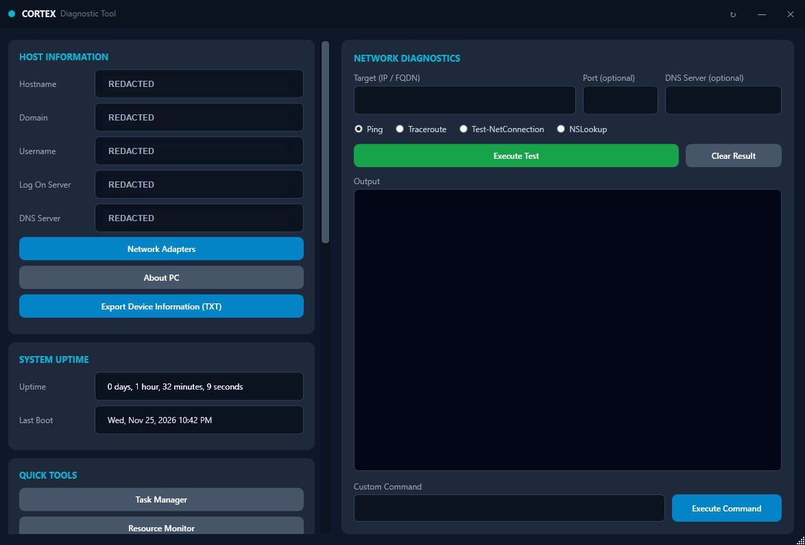

Host and endpoint information
Displays hostname, domain, signed-in user information, device model, Windows version, CPU, memory, and graphics details.
DESKTOP APPLICATION / ENDPOINT DIAGNOSTICS
A unified Windows diagnostics workspace designed for practical IT support and endpoint troubleshooting.
OVERVIEW
Inspired by recurring tasks in IT systems support, I built Cortex to consolidate common workstation checks in a single graphical interface. It reduces the need to switch between Windows administrative utilities and command-line tools when gathering information for troubleshooting.
Displays hostname, domain, signed-in user information, device model, Windows version, CPU, memory, and graphics details.
Shows storage utilization, basic Windows-reported drive health, live uptime, and last boot information.
Provides network adapter details, DNS information, and proxy status, with a dedicated adapter information window.
Provides shortcuts to Task Manager, Resource Monitor, Reliability Monitor, and Programs & Features.
Drive health is based on Windows' reported status; specialized tools are still needed for detailed SMART data and wear analysis.
APPLICATION SHOWCASE

NETWORK DIAGNOSTICS
Cortex lets the operator run common connectivity checks and view their results in the application, with controls for stopping and clearing diagnostics.
PingBasic host reachability and response times.TracerouteNetwork path troubleshooting.Test-NetConnectionConnectivity and TCP port checks.NSLookupDNS name resolution troubleshooting.The custom PowerShell console runs operator-entered commands with the current user's permissions. Commands are audited, not sandboxed; only authorized diagnostics should be run.
ARCHITECTURE
A native C# process runner captures child-process output, while a WPF dispatcher timer updates the console during diagnostic tasks.
Separates configuration, data providers, UI construction, report generation, diagnostics, and event wiring into distinct script regions.
REPORTING AND OPERATIONS
Combines endpoint, system, storage, health, proxy, and network information into a timestamped text report that can be saved for documentation or authorized escalation.
Records administrative actions and custom commands locally. Log rotation bounds log growth and retains a limited number of archived logs.
Device reports and audit logs can contain sensitive system information and should be reviewed before sharing.
LEARNING OUTCOMES
Cortex combines my IT support experience with Windows desktop development to create a practical diagnostic application.